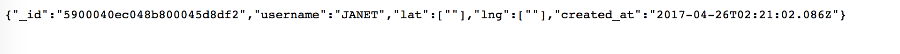

I was required to test for vulnerabilities in the pacific-oasis-25316 site. In the following document you'll find descriptions of possible insecurities in the website as well as some recommendations as to how to fix them.
I mainly looked at the source code for cross-site scripting vulnerabilities, using curl to test send data. I also opened up the mongodb sandbox on heroku to check which documents have been inserted and into which collection. I tested both locally as well as to the actual site, opening up pages in the web browser to get certain routes.
The source code does not filter or restrict user input, so that hackers could technically send in all sorts of data that don't match the criteria.
The source code does not ask for usernames and passwords for people who want to connect to the mongodb database.
Malicious sites may access the website and do dangerous things such as bypassing the authentication process by exploiting a cookie or something similar.
The issue occurs in the app.post route function starting from line 51 in index.js. This issue would be of high severity because sending bad data can potentially be very dangerous if they send in bad scripts. I found this issue by curling data to the submit route that were clearly not suitable data types for username, latitude or longtitude. The following screenshots prove that when I send in strings or an empty json object as latitude and longtitude numbers, the program still accepts it as normal. A particularly insecure example is when I tested: curl -d "username=JANET&lat[$gt]=&lng[$gt]=" https://pacific-oasis-25316.herokuapp.com/submit. As shown, the structure/datatype of the lat and lng data fields have changed.
A potential solution to this security issue is to filter the data from the request body by converting the string first instead of just taking in the string directly, or actually validating the input beforehand. As a result, any bad data would result in an error.
The issue occurs between lines 9 and 11, where the code establishes a connection to the mongodb using Mongoclient. This issue would be of medium security because with absolutlely no authentication process in place, potentially anyone can access the mongodb. I found this issue by looking at the source code and the documentation for Mongoclient. As described in the documentation, Mongoclient offers the authorization option that will require an extra layer of security for those who want to connect. A potential solution is to use the option and keep passwords in a different file or encrypted.
The issue occurs on line 25, where the response header is set to a wild card (*) for Access-Control-Allow-Origin. This issue would be of low severity because there is no real authentication/login process established for this site and it is considered more like an open data site. In real life, however, if someone logged into a bank website and stayed logged in because of a cookie, any malicious site could access the site right after me and access my account. I found this issue by examining the source code. A potential solution to this issue is to specify which site has access control to the website, instead of granting access to all.
Almost all websites can be improved using some simple steps to achieve better security. In particular, this website could better sanitize user input, as well as refine the authentication process.
Cross-site scripting:
http://www.veracode.com/security/xs
http://blog.websecurify.com/2014/08/hacking-nodejs-and-mongodb.html
Passwords:
https://security.web.cern.ch/security/recommendations/en/password_alternatives.shtml
https://mongodb.github.io/node-mongodb-native/driver-articles/mongoclient.html
CORS access control:
https://stackoverflow.com/questions/12001269/what-are-the-security-risks-of-setting-access-control-allow-origin